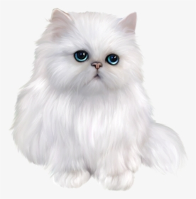

Let's talk about cats
What you don't know
- Cats are believed to be the only mammals who don't taste sweetness.
- While us humans have 206 bones, cats on average have 244.
- Cats are nearsighted, but their peripheral vision and night vision are much better than that of humans.
Breeds
Persian cat
Is a long-haired breed of cat characterized by its round face
Maine Coon

The Maine Coon is a large domesticated cat breed. It has a distinctive physical appearance and valuable hunting skills.
Norwegian Forest Cat

his natural breed is adapted to a very cold climate, with a top coat of glossy, long, water-shedding hair and a woolly undercoat for insulation.